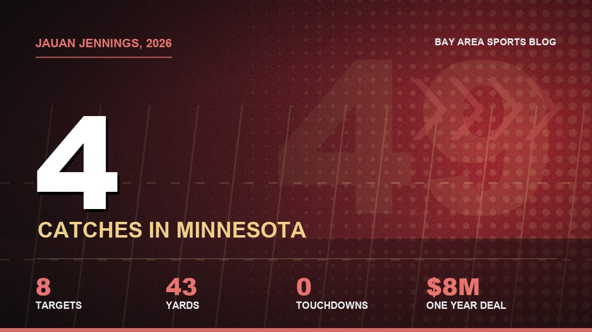
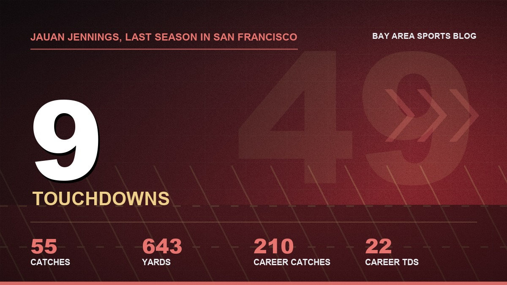
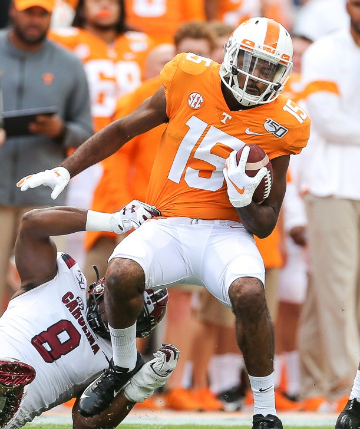

Jauan Jennings Said No to Coming Home. That One Stings.
The trade was done. The two teams agreed. All Jauan had to do was get on a FaceTime and tell Kyle and John he wanted back in. He didn't.

I was halfway through a breakfast burrito on Sunday morning, bye week, nothing on but the pregame shows, when my brother texted me three words. "Jauan said no."
I didn't even know what he meant at first. Then I did, and I put the burrito down.
Three weeks ago I wrote that the Niners should go get Jauan Jennings back from Minnesota, that it'd cost next to nothing, that he'd walk in on a Wednesday and play on Sunday like he never left. Turns out the front office agreed with me. The 49ers and Vikings got all the way to the finish line on a deal. Terms were settled. The only thing left was a FaceTime with Kyle Shanahan and John Lynch, and Jauan was supposed to look at them and say he wanted to come home.
He looked at them and said he wants to stay in Minnesota. He likes what's going on there.
And that was it. Deal dead.
He didn't have to say yes, and that's the part that gets me
Jauan doesn't have a no trade clause. Minnesota could've shipped him off without asking. Both front offices decided they wanted him on board first, which honestly makes sense. Why trade for a guy who doesn't want to be in your building, in the middle of a season where you're 6 and 1 and every snap matters?
So they gave him the choice. He made it.
I've read that twice now and it still feels weird. This is a guy who's catching almost nothing out there. Four catches on eight targets for 43 yards and no touchdowns through five games with the Vikings. He signed a one year, $8 million deal in May, with incentives that could push it to $13 million, and he's going to need a lot of luck to hit any of them as the third option behind Justin Jefferson and Jordan Addison.

Back here he'd have been a starter the minute he landed. Our receiver room is held together with tape right now. Mike Evans is fighting through Achilles tendinitis, Deebo's dealing with the hamstring, Ricky Pearsall's been banged up, and we went into Atlanta last week looking thin enough that you could see it from the couch. We lost that one. Jauan would've walked straight into targets, a quarterback he trusts on third down, and a team that's in first place.
He said no to all of it. You have to really not want something to do that.
So yeah, this is about the money from last summer
Nobody's going to say it out loud, so I will. This goes back to 2025.
Remember that summer? Jauan wanted a new deal or a trade going into the last year of his contract. The team said no to the trade. He went through camp unhappy, dealt with the calf, and eventually they settled on adding $3 million in playing time incentives to his 2025 money, so he could get up to $10.5 million instead of $7.5. The front office wanted something longer that kept him past the season. He took the one year and bet on himself.
And he won the bet on the field, at least. Fifty five catches, 643 yards and nine touchdowns. Nine. Led the team. Then the market came back way softer than anybody expected, he didn't get the deal from us, and he ended up taking $8 million in Minnesota in May, which is basically a prove it contract for a guy who already proved it.

If I'm him? I probably don't want to hop on a video call and tell the two guys who wouldn't pay me that I miss them. I get it. I hate it, but I get it. Pride's a real thing, and Jauan has always played like a guy with about three times the normal amount of it. That's the whole reason we loved him.
Do I think he hates Kyle? No. I think he's tired of the business side of this place, and he's on a team that walked into this weekend undefeated, and he decided he'd rather be a small part of that than a big part of a reunion he didn't ask for. Maybe I'd do the same. Probably not. I'd have taken the call and said yes before Lynch finished the sentence, but I'm not a seventh round pick who had to fight for every dollar.
What it means for the deadline
Lynch already made the big move. DeForest Buckner is back for a 2027 fourth, and that one actually helps the part of this team that needed it most. The deadline is November 10, so there's still a week and change to find somebody, and we've got the cap room and the picks to get it done if the right name shakes loose.
I just don't love the options. Nobody out there knows this offense the way Jauan does. That was the entire pitch. You were buying five years of muscle memory, every crack block and every option route, and you can't get that from a guy you pull off a rebuilding team in the AFC.
The bye couldn't have come at a better time, at least. Evans, Deebo and Demarcus Robinson get a week to heal before the Raiders come in, and if even two of those three are close to right, maybe we don't need a trade at all. I keep telling myself that. Some days I even believe it.

Mexico City just got a lot more interesting
And get this. We play the Vikings on November 22 at Estadio Banorte. Our home game, in Mexico City.
So Jauan's going to line up across from us three weeks from now in purple, after turning down the chance to be in red and gold that same day. If he catches a ball in that game I'm going to be furious. If he catches a touchdown in that game I don't know what I'll do. Probably throw something soft. My wife has already moved the remote.
And part of me, the stupid part, is still going to stand up and clap when they run his name on the broadcast. Five years. The Super Bowl throw to McCaffrey. All those third downs with a corner hanging off his facemask. That doesn't disappear because he didn't want to come back.
I still have the 15 jersey. It's not going anywhere. I just might not wear it on the 22nd.
The original case for bringing him back is in my column from three weeks ago, which aged like milk. The move that did happen is in the Buckner column, and the rest of the deadline noise is in the Garrett Wilson piece. Who's healthy and who isn't lives on the injury report and the depth chart, the full season is on the schedule hub, and everything else is on the 49ers hub.
More coverage: 49ers · NFL · Bay Area Sports Blog home